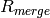
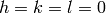
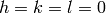

SortHKL dialog.
Table of Contents
| Name | Direction | Type | Default | Description |
|---|---|---|---|---|
| InputWorkspace | Input | PeaksWorkspace | Mandatory | An input PeaksWorkspace with an instrument. |
| PointGroup | Input | string | -1 (Triclinic) | Which point group applies to this crystal? Allowed values: [‘-1 (Triclinic)’, ‘-3 (Trigonal - Hexagonal)’, ‘-3 r (Trigonal - Rhombohedral)’, ‘-31m (Trigonal - Hexagonal)’, ‘-3m (Trigonal - Hexagonal)’, ‘-3m r (Trigonal - Rhombohedral)’, ‘-3m1 (Trigonal - Hexagonal)’, ‘-4 (Tetragonal)’, ‘-42m (Tetragonal)’, ‘-43m (Cubic)’, ‘-4m2 (Tetragonal)’, ‘-6 (Hexagonal)’, ‘-62m (Hexagonal)’, ‘-6m2 (Hexagonal)’, ‘1 (Triclinic)’, ‘112 (Monoclinic, unique axis c)’, ‘112/m (Monoclinic, unique axis c)’, ‘11m (Monoclinic, unique axis c)’, ‘2 (Monoclinic, unique axis b)’, ‘2/m (Monoclinic, unique axis b)’, ‘222 (Orthorombic)’, ‘23 (Cubic)’, ‘2mm (Orthorombic)’, ‘3 (Trigonal - Hexagonal)’, ‘3 r (Trigonal - Rhombohedral)’, ‘312 (Trigonal - Hexagonal)’, ‘31m (Trigonal - Hexagonal)’, ‘32 (Trigonal - Hexagonal)’, ‘32 r (Trigonal - Rhombohedral)’, ‘321 (Trigonal - Hexagonal)’, ‘3m (Trigonal - Hexagonal)’, ‘3m r (Trigonal - Rhombohedral)’, ‘3m1 (Trigonal - Hexagonal)’, ‘4 (Tetragonal)’, ‘4/m (Tetragonal)’, ‘4/mmm (Tetragonal)’, ‘422 (Tetragonal)’, ‘432 (Cubic)’, ‘4mm (Tetragonal)’, ‘6 (Hexagonal)’, ‘6/m (Hexagonal)’, ‘6/mmm (Hexagonal)’, ‘622 (Hexagonal)’, ‘6mm (Hexagonal)’, ‘m (Monoclinic, unique axis b)’, ‘m-3 (Cubic)’, ‘m-3m (Cubic)’, ‘m2m (Orthorombic)’, ‘mm2 (Orthorombic)’, ‘mmm (Orthorombic)’] |
| LatticeCentering | Input | string | Primitive | Appropriate lattice centering for the peaks. Allowed values: [‘Primitive’, ‘C-face centred’, ‘A-face centred’, ‘B-face centred’, ‘Body centred’, ‘All-face centred’, ‘Rhombohedrally centred, obverse’, ‘Rhombohedrally centred, reverse’, ‘Hexagonally centred, reverse’] |
| OutputWorkspace | Output | PeaksWorkspace | Output PeaksWorkspace | |
| OutputChi2 | Output | number | Chi-square is available as output | |
| StatisticsTable | Output | TableWorkspace | StatisticsTable | An output table workspace for the statistics of the peaks. |
| RowName | Input | string | Overall | name of row |
| Append | Input | boolean | False | Append to output table workspace if true. If false, new output table workspace (default). |
SortHKL calculates some data set statistics using the intensities of the peaks in the
supplied input workspace, such as  and  , (formulas
and references for example here)
but also redundancy and completeness.
, (formulas
and references for example here)
but also redundancy and completeness.
At first, the algorithm determines the minimum and maximum  -value from the
input peaks. Using these limits, the unit cell, centering and point group all possible
unique reflections are calculated, the number of which is
-value from the
input peaks. Using these limits, the unit cell, centering and point group all possible
unique reflections are calculated, the number of which is  .
.
After removing invalid peaks with  ,
,  and ,
the peaks are assigned to their respective unique reflection so that each theoretically present
reflection may have
and ,
the peaks are assigned to their respective unique reflection so that each theoretically present
reflection may have  observations ( can be zero). The number of unique reflections
which have at least one observation can be labeled
observations ( can be zero). The number of unique reflections
which have at least one observation can be labeled  . The completeness
is defined as the fraction
. The completeness
is defined as the fraction  and ranges between 0 and 1.
The total number of observations
and ranges between 0 and 1.
The total number of observations  and determine the average
redundancy
and determine the average
redundancy  in the data set, which is the average number of
observations for each unique reflection.
in the data set, which is the average number of
observations for each unique reflection.
The intensities of peaks in each reflection are checked for outliers, which are removed. Outliers
in this context are peaks with an intensity that deviates more than  from the
mean of the reflection, where
from the
mean of the reflection, where  is the standard deviation of the peak intensities.
is the standard deviation of the peak intensities.
The intensities and errors of each peak is set to the mean intensity and sigma of the unique reflection it belongs to, so that equivalent reflections have the same intensity and error in the output workspace.
Finally, the peaks in the output workspace are sorted by H, K and L.
The following usage example uses data obtained from a trigonal structure. The peaks are loaded and a UB-matrix is determined. The peaks are transformed to conform with a conventional cell, which has hexagonal metric and rhombohedral centering:
# Load example peak data and find cell
peaks = LoadIsawPeaks(Filename=r'Peaks5637.integrate')
FindUBUsingFFT(peaks, MinD=0.25, MaxD=10, Tolerance=0.2)
SelectCellWithForm(peaks, FormNumber=9, Apply=True, Tolerance=0.15)
OptimizeLatticeForCellType(peaks,
CellType='Hexagonal', Apply=True, Tolerance=0.2)
# Run the SortHKL algorithm
sorted, chi2, statistics_table = SortHKL(peaks, PointGroup='-3m1 (Trigonal - Hexagonal)',
LatticeCentering='Rhombohedrally centred, obverse')
statistics = statistics_table.row(0)
print 'Data set statistics:'
print ' Peaks: {0}'.format(sorted.getNumberPeaks())
print ' Unique: {0}'.format(statistics['No. of Unique Reflections'])
print ' Completeness: {0}%'.format(round(statistics['Data Completeness'], 2))
print ' Redundancy: {0}'.format(round(statistics['Multiplicity'], 2))
Output:
Data set statistics:
Peaks: 408
Unique: 337
Completeness: 9.11%
Redundancy: 1.21
Categories: Algorithms | Crystal\Peaks | DataHandling\Text | Utility\Sorting